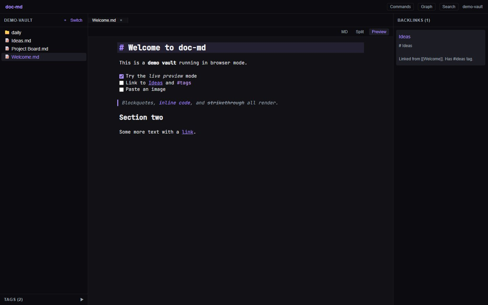
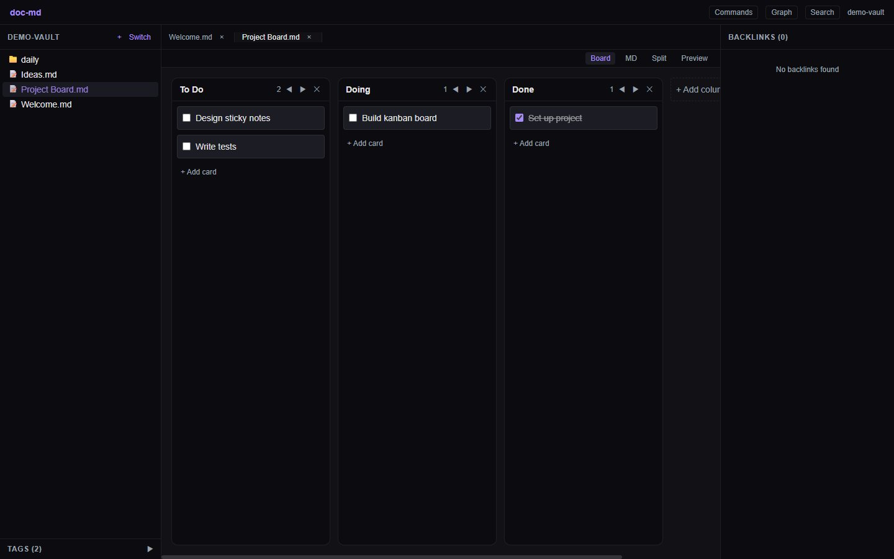
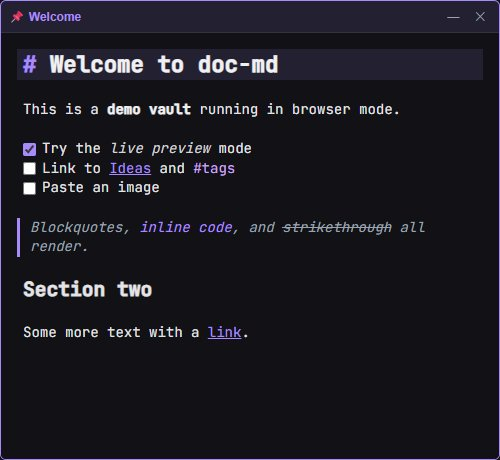
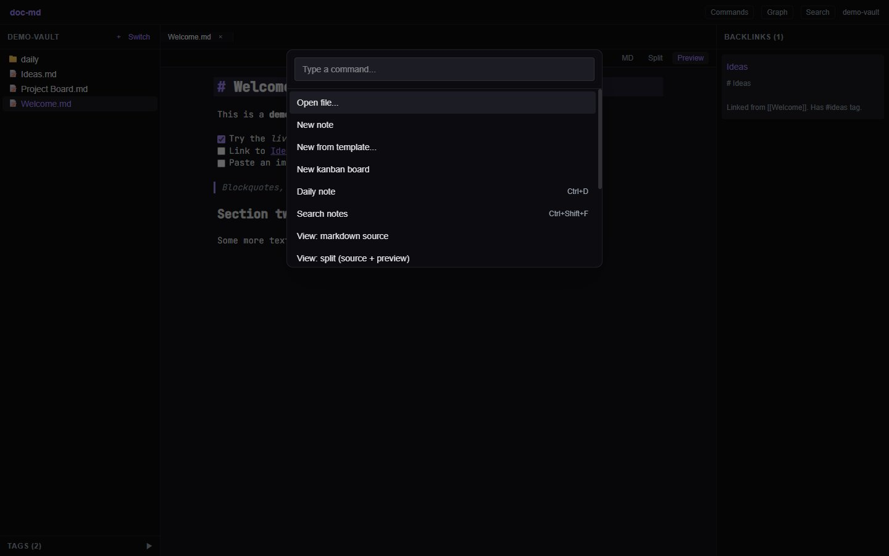

free & open source · no account · no telemetry
Download doc-md.
A local-first markdown knowledge app. Live-preview editing, wiki links, kanban boards, sticky notes, graph view, and full-text search — over plain markdown files in a folder you choose. Your notes never leave your computer.
Download
Fetching the latest version from GitHub…
-
Windows
Most people want the .exe installer. The .msi does the same job and exists for IT tools that prefer it.
-
macOS
One universal .dmg covers both Apple Silicon and Intel Macs.
-
Linux
.AppImage runs anywhere with no install; .deb for Debian/Ubuntu, .rpm for Fedora/openSUSE.
How to install
On Windows
- Choose Download for Windows (.exe installer) above and save the file. Your browser's downloads list opens with Ctrl+J in Chrome, Edge, and Firefox.
- Open the downloaded file, named like doc-md_0.2.0_x64-setup.exe.
- If Windows shows a "Windows protected your PC" message (SmartScreen), choose More info, then Run anyway. By keyboard: press Tab until "More info" is focused, press Enter, then Tab to "Run anyway" and press Enter. Newer doc-md releases are code-signed, so this screen only appears for older unsigned versions — the app is open source and safe to run either way.
- Follow the installer — the defaults are all fine. It finishes by launching doc-md.
- On first launch, doc-md asks you to choose a vault: a normal folder where every note is stored as a plain markdown file. Pick or create any folder you like, for example Documents\Notes. You can open it in Explorer any time — there's no hidden database.
On macOS
- Choose Download for macOS (.dmg) above and open the downloaded file.
- Drag doc-md into the Applications folder shown next to it.
- First open only: right-click (or Control-click) doc-md in Applications, choose Open, then confirm Open. This is macOS Gatekeeper meeting a new app. If it still refuses: System Settings → Privacy & Security → "Open Anyway".
- Choose a vault folder on first launch — any folder; notes are plain markdown files inside it.
On Linux
- AppImage (any distro): make it executable and run it — chmod +x doc-md_*.AppImage && ./doc-md_*.AppImage
- Debian / Ubuntu: sudo apt install ./doc-md_*_amd64.deb
- Fedora / openSUSE: sudo dnf install ./doc-md-*.x86_64.rpm
- Launch doc-md from your app menu and choose a vault folder on first run.
A quick look




Need help?
Something unclear, broken, or missing? Open an issue on GitHub — the templates walk you through what to include. The README covers every feature and keyboard shortcut.